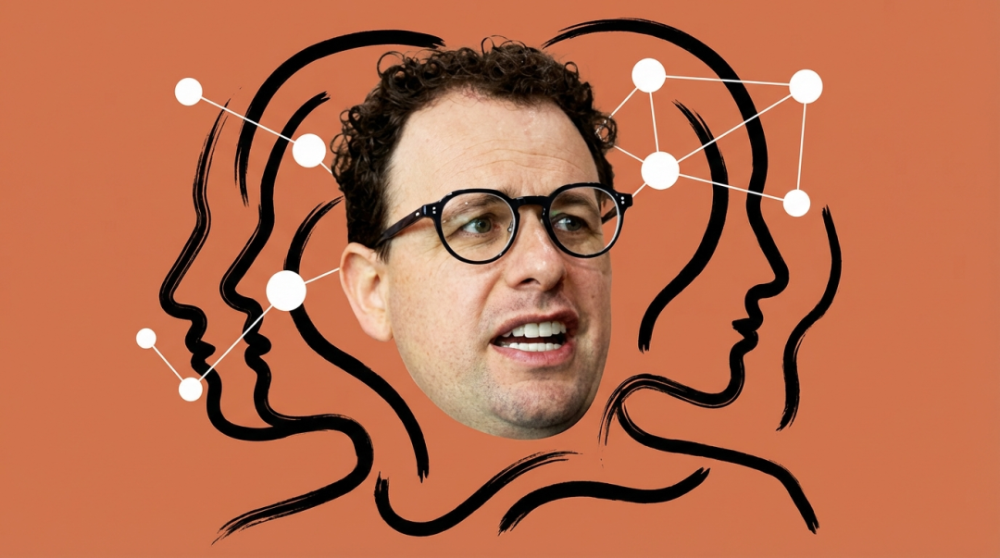
2026年2月19日，印度新德里。
莫迪总理在AI Impact Summit上做了一件他在所有外交场合都爱做的事：拉着在场的科技领袖手拉手合影。站在他左侧的是OpenAI的Sam Altman，右侧几步之外是Anthropic的Dario Amodei。
镜头捕捉到了一个细节：Altman和Amodei之间没有任何身体接触，没有握手，没有眼神交流。莫迪试图拉起Altman的手举起来拍照，Altman勉强配合，但明显避开了身旁的Amodei。视频传上社交媒体后，迅速成为科技圈最津津乐道的画面之一。
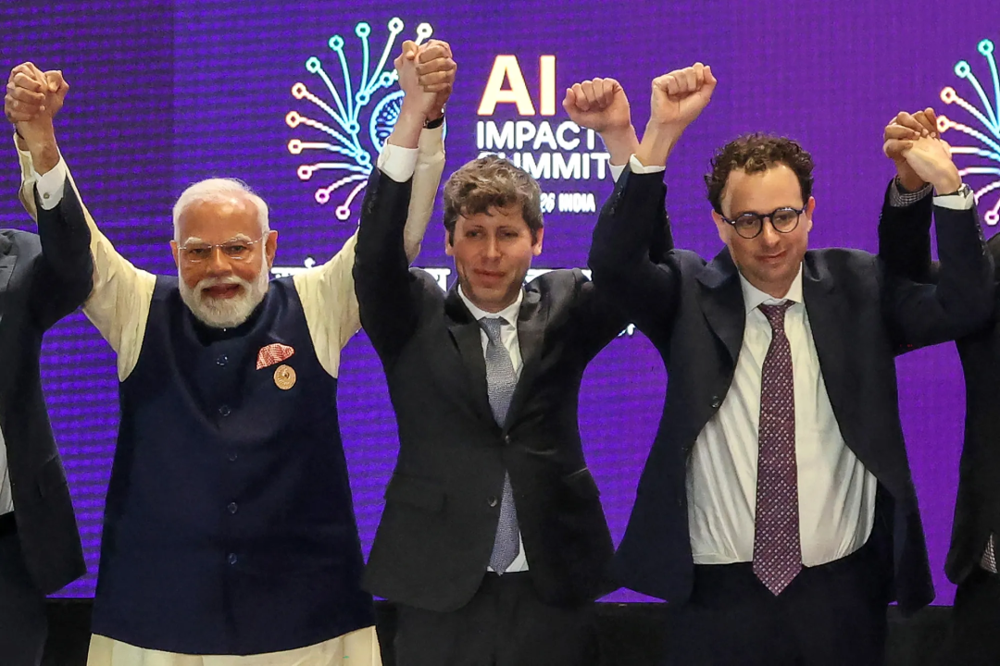
Altman事后回应「我只是有点困惑」。没人信。
四天后，2月23日，Anthropic发布了一篇博客，指控DeepSeek、月之暗面和MiniMax三家中国AI公司通过2.4万个虚假账号，对Claude进行了「工业级蒸馏攻击」。
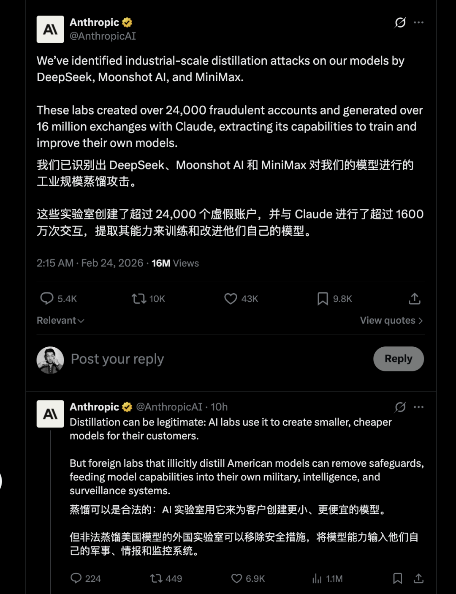
同一天，另一则消息传出：美国国防部长Pete Hegseth召见Dario Amodei到五角大楼对质——因为Anthropic签了2亿美元的军方合同，却拒绝让军方把Claude用于自主武器和大规模监控。五角大楼的一位高级官员对媒体说，这「不是一个友好的会面，是一个要么上船、要么下船的会面」。
一个人，在同一周内，同时跟前东家对峙、跟美国军方对峙、跟中国AI公司对峙。
如果这个是部电影的话，现在可能是最具戏剧张力的一个时刻。这也正是2026年2月，AI行业最中心位置的真实状况。
我每天都在用Claude写代码、写文章、做调研，过去一年写了不下五篇Claude相关的评测和教程。Claude Code是我现在最常用的AI产品，Opus 4.6也是我最喜欢体感最好的模型，但对于Anthropic这家公司，对Dario这个人我实在是撑不上喜欢。
所以，抱着一个复杂又矛盾的心理，作为一个重度用户，我花了两周时间，把能找到的访谈、长文、新闻报道和争议事件全部梳理了一遍，想搞清楚这个产品背后的那个人到底在想什么。
看完之后，我的结论是：Dario Amodei可能是AI时代最矛盾的人物。
而这一切，按弗洛伊德和荣格的逻辑来说，我们不得不追根溯源，从他童年时代和家庭背景说起。
物理少年
1983年，Dario Amodei出生在旧金山。父亲Riccardo是意大利裔的皮革手工匠人，母亲Elena是犹太裔的图书馆项目经理。他还有一个小他四岁的妹妹Daniela。
从小就是一个纯粹的理科少年。在旧金山的Lowell高中——一所以学术竞争著称的公立名校——他几乎只对数学和物理感兴趣。2000年互联网泡沫在旧金山炸开的时候，身边的人都在讨论创业和IPO，而他在准备物理竞赛。同年，入选美国物理奥林匹克国家队。
2001年进入加州理工学院学物理，后来转到斯坦福完成本科。如果一切顺利，他大概会成为一个理论物理学家，在某个大学里安静地研究弦论或者量子引力，远离硅谷的喧嚣。
但2006年发生了一件事。
他的父亲去世了。一种罕见的慢性疾病，拖了很久。
关于这件事，Dario在公开场合几乎从不展开。后来的访谈中偶尔用极其克制的措辞带过——「个人原因」「家庭经历」。但你能从他后来所有的选择里看到这件事的影子。一个原本研究弦论和量子引力的人，开始问自己一个完全不同的问题：能不能做点什么，直接帮到人类的健康和疾病？
他从理论物理转向了生物学。在普林斯顿读博士期间，研究的是计算神经科学和神经回路的统计力学模型。
博士导师Berry后来评价他是「我带过的最有天赋的研究生」，但同时说了一句意味深长的话：Dario对技术进步和团队合作的执着，在强调个人成就的学术系统中格格不入。
这句评价几乎预言了他后来的整个职业轨迹。
博士后阶段在斯坦福医学院研究癌细胞检测。这段经历让他意识到一件事：个人做研究太慢了。要解决真正大的问题，需要更强大的工具。
什么工具？AI。
大模型时代的核心建造者
Dario进入AI行业的路径，今天看来几乎是一条完美的升级路线。
2014年加入百度AI部门，跟吴恩达一起做了Deep Speech 2——一个端到端的深度学习语音识别系统，被MIT Technology Review评为2016年十大突破性技术之一。这段经历让他从生物物理领域正式转入了AI。
当然，这段历史很多人都知道，也往往都在困惑Dario在百度的那一两年究竟经历了什么，让他现在有如此的对华态度，这个事件似乎始终是个谜。我也始终没能找到当时和Dario共事过的他的百度同事出来谈及此事的。
而在百度之后，他短暂加入Google Brain。然后，2016年，他加入了OpenAI。
在OpenAI的四年半，是他职业生涯的核心阶段。
他不是一个普通的研究员。他职业生涯算是进展相当快，已经是GPT-2和GPT-3的共同领导者。他和Jared Kaplan等人一起发表了那篇改变行业的论文：《Scaling Laws for Neural Language Models》。揭示了模型性能和规模之间的幂律关系，直接奠定了后来所有大模型公司拼命堆算力的理论基础。他还参与了RLHF技术的早期开发，这套方法后来成了ChatGPT和Claude共同的训练核心。
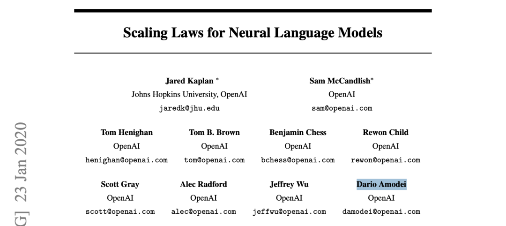
从AI安全团队负责人，到研究总监，到研究副总裁——四年半内连升三级。
如果你想给2020年的AI行业画一张权力图谱，Dario Amodei一定是最靠近中心的那几个人之一。
然后他走了。
「出埃及记」
2020年12月，Dario离开了OpenAI。
关于离开的原因，他在不同场合说过不同版本的话，但核心指向一致：对领导层的信任出了问题。
他在Lex Fridman的播客上说过一句措辞微妙但相当尖锐的话：关于治理、安全研究和发布策略的关键决策，「由那些动机并不真诚的人在高层做出」。
他没有点名。但所有人都知道他在说谁。
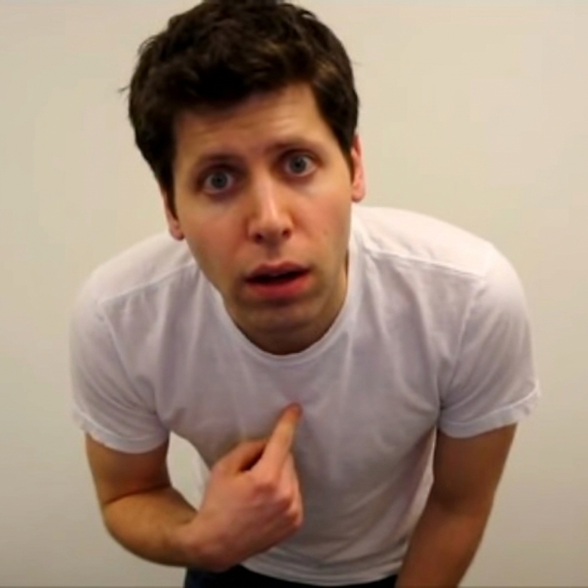
OpenAI从非营利组织转向「有限盈利」公司的方向，和他对安全优先的理念产生了根本冲突。他认为OpenAI在快速扩张ChatGPT的过程中，没有给安全足够的重视。
但让这次离开真正震撼行业的，不是Dario一个人走了，而是他带走了谁。
Tom Brown——GPT-3论文的第一作者。Jared Kaplan——Scaling Laws论文的核心作者。Sam McCandlish。Chris Olah——可解释性研究的先驱。Jack Clark——OpenAI的政策总监。还有他的妹妹Daniela，当时是OpenAI的安全与政策副总裁。
加上后续陆续加入的，大约14名OpenAI研究人员跟着走了。GPT-2和GPT-3的核心建造团队，几乎全部出走。
2021年，Anthropic成立。
故事到这里，画风还很清晰：一个有理想的科学家，因为理念分歧离开了一家他认为偏离初衷的公司，带着最核心的团队，去做他认为「正确的事」。
如果故事就此结束，Dario Amodei大概会是一个教科书式的理想主义创业者。
但故事远没有结束。
拒绝王座
在讲后面的矛盾之前，有一个细节值得单独说。
2023年11月，OpenAI发生了那场戏剧性的政变——Sam Altman被董事会突然解职。那几天硅谷像炸了锅，没人知道OpenAI下一步会怎样。
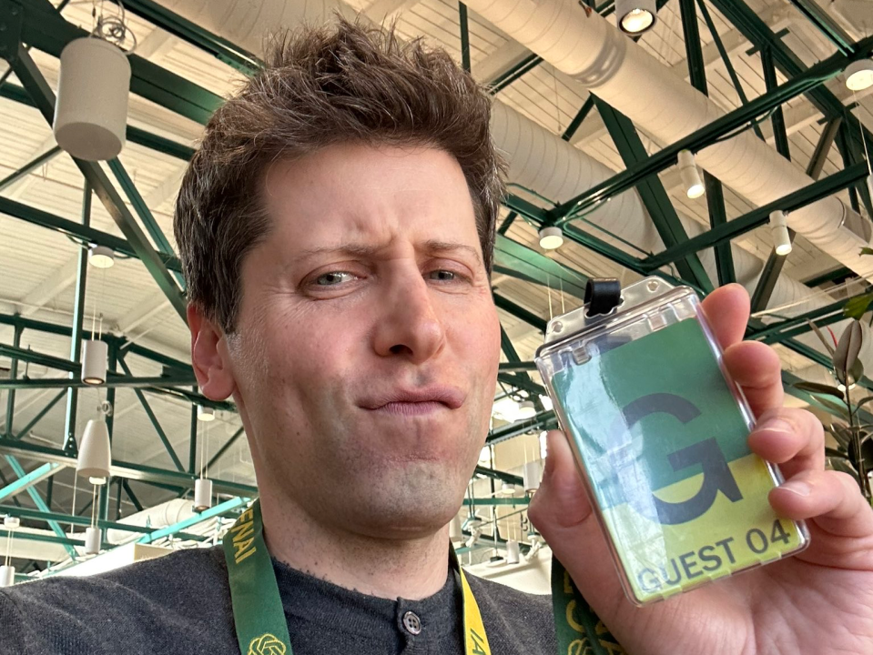
在混乱中，OpenAI董事会联系了Dario Amodei，提了两个方案：
第一，让他回去接任OpenAI CEO。
第二，把Anthropic和OpenAI合并。
他两个都拒绝了。
几天后，Altman回归。两人之间的关系也许就是从这个时刻开始，从「前同事的分歧」升级成了某种更深的东西。
两年后的印度峰会上，他们拒绝牵手。
兄妹搭档
Anthropic有一个非常罕见的创始人组合：理工科博士哥哥+文科学士妹妹。
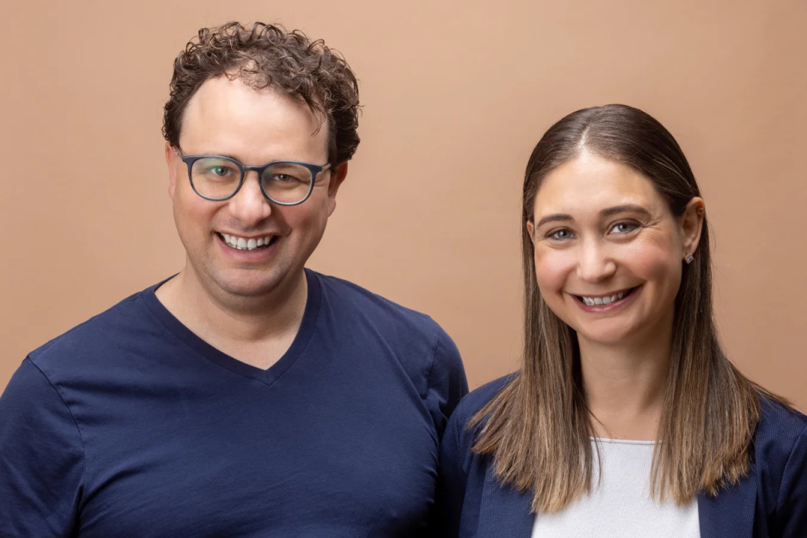
Daniela Amodei，1987年生，加州大学圣克鲁兹分校英语文学学士，以最优等成绩毕业。她的职业起点不是科技公司，而是华盛顿特区——给国会众议员做通讯主管。后来加入了Stripe（算早期员工），再后来跟着哥哥去了OpenAI，做到安全与政策副总裁。
一个写代码的，一个写文章的。一个思考技术愿景，一个管运营和政策。2023年，兄妹俩同时入选了TIME 100 AI榜单。
还有一个有意思的关联：Daniela的丈夫Holden Karnofsky是Open Philanthropy的前AI战略负责人，现在是Anthropic的董事会成员。Open Philanthropy是有效利他主义运动中最重要的资助机构之一。Anthropic最早的投资者——Facebook联合创始人Dustin Moskovitz、Skype联合创始人Jaan Tallinn——都是EA圈子的核心人物。
这些关系让外界始终对Anthropic和EA运动之间的距离保持怀疑。Dario本人近年来刻意和EA保持距离，把自己的AI安全关切重新框定为「工程纪律和企业责任」，而不是任何哲学运动的延伸。
但圈子就在那里。钱从哪来，人从哪来，价值观从哪来——这些东西不是一个声明就能切割干净的。
安全帝国
Anthropic的增长速度是疯狂的。
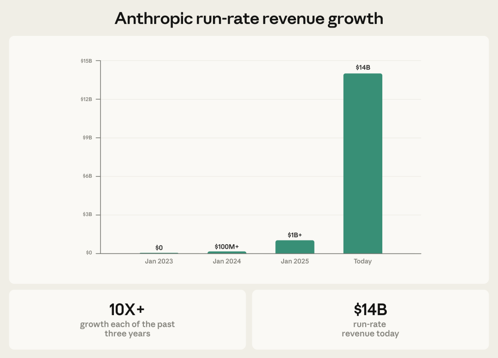
不到5年，估值涨了690倍——从5.5亿到3800亿美元。收入两年增长100倍，2026年初的年化收入已经到了140亿美元。Amazon投了80亿，Google投了30亿。在企业LLM市场上，Anthropic拿下了40%的份额——超过OpenAI和Google。
一家以「安全」为核心品牌的公司，增长速度比任何对手都快。
Bloomberg写过一个标题叫「Anthropic的安全执念是其杀手级特性」。在企业市场，安全不是负担，是溢价。你能想象一个银行或者律所的CTO跟老板说「我们选了那个最安全的AI模型」——这句话在合规审查会议上值多少钱？
这就是Dario Amodei身上第一层矛盾的来源：安全既是信仰，也是一门好生意。当信仰和生意完美对齐的时候，你无法分辨一个人到底是在坚持原则，还是在做精明的品牌定位。
两篇文章
想回答这个问题，得先进入Dario的思想世界。有两篇文章是必读的。
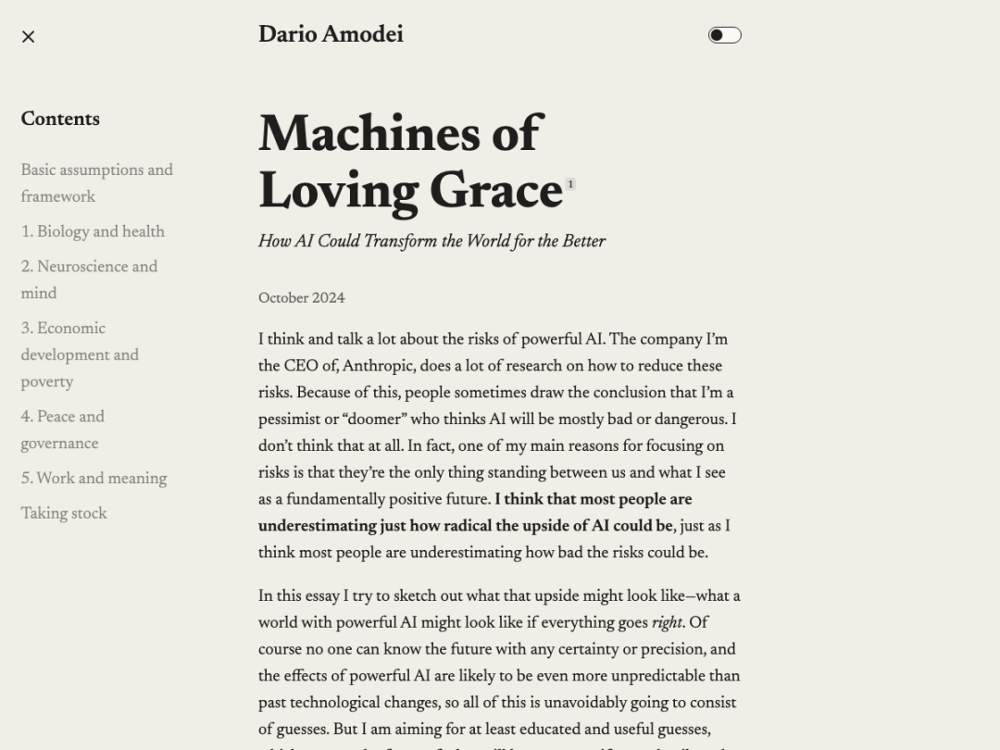
第一篇是2024年10月的「Machines of Loving Grace」。标题取自Richard Brautigan 1967年的同名诗。这篇50多页的长文，核心是一个乐观愿景：如果AI一切顺利，世界会变成什么样？
他最有信心的领域是生物医学——这和他自己的学术背景有关，也和父亲去世的经历有关。他预测AI可能在5到10年内压缩一个世纪的生物学研究进展，他称之为「压缩的21世纪」。治愈大多数癌症，预防遗传病，甚至让人类寿命翻倍。
但他也坦承，在民主与治理方面，他看不到AI会结构性地推进和平的强有力理由——因为AI同时赋能好人和坏人。
这篇文章发布后，反响分裂。支持者觉得这是AI行业罕见的「阳光面」叙事，「如同一股清新空气」。批评者——比如Gary Marcus——认为这是精心包装的营销，发布当天Claude恰好更新了版本。一个正在卖AI技术的亿万富翁CEO在「恳求社会约束」他自己的技术，这画面确实值得玩味。
第二篇是2026年1月的「The Adolescence of Technology」。两万字。核心比喻是「技术青春期」：人类即将获得几乎不可想象的力量，但我们是否成熟到能驾驭它？他预测2026或2027年——最迟不超过2030年——AI能力将等同于「一个数据中心里的天才国度」。
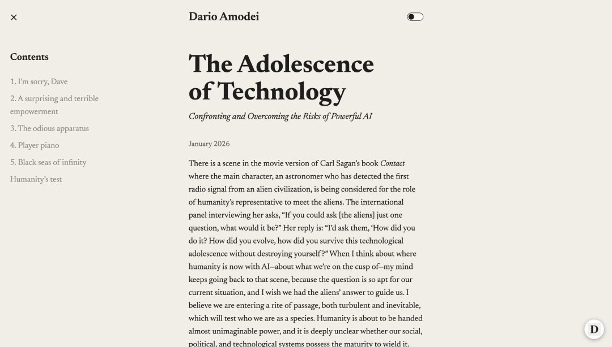
他的框架很有意思：因为AI的未来太好了，所以更不能搞砸。因为太乐观，所以更重视风险。
我花了两小时听完他在Dwarkesh Patel播客上的访谈，之前写过一份笔记。当时印象最深的是两组数据：
第一，Anthropic收入的爆发式增长背后藏着巨大的风险。Dario自己说，如果需求预测错了1年，公司就会破产。「地球上没有任何力量、任何对冲手段能阻止我在买了那么多算力后破产。」在所有人都在YOLO的时候，这种克制本身就是一种信号。
第二，AI编程目前的真实生产力提升只有15-20%。MIT研究更扎心：开发者觉得自己效率提高了，但实际合并的PR反而少了20%。
感知和现实之间的鸿沟，可能是当下AI行业最大的认知盲区。而Dario是少数愿意公开承认这个鸿沟的CEO之一。这到底是因为他更诚实，还是因为他发现「谦虚」也是一种好用的品牌策略？
我不确定。也许两者皆是。
三重身份
带着这种不确定感，再来看Dario 2024年以来的公开行为，画面就更立体了。他同时在扮演三个角色，而这三个角色之间存在巨大的张力。
第一重：前沿AI公司CEO。
他在拼命推进模型能力。Claude Code改变了整个AI编程工具的格局。Anthropic内部，70%-90%的代码已经由Claude编写。一个工程师Boris Cherny在2025年12月一个月提交了300多个PR，同时运行5个以上AI Agent。Claude Code Security发布的那天，CrowdStrike和Cloudflare等网安公司的股价暴跌8-10%。
这是一个正在颠覆多个行业的AI巨头。
第二重：AI安全传教士。
前面提到的那两篇文章，是他传教的核心文本。但更直接的是他在媒体上的表态。2025年11月，在CBS 60 Minutes上对着Anderson Cooper说：「我对这些决策由几家公司、几个人来做，感到深深的不安。」
同一个人，白天在推销Claude能替代多少人类工作，晚上在电视上说AI可能消灭一半入门级白领岗位。
第三重：地缘政治鹰派。
2026年1月的达沃斯论坛上，他炮轰Trump政府批准向中国出售Nvidia H200芯片：「这太疯狂了。这就像把核武器卖给朝鲜，然后吹嘘波音造了弹壳。」
讽刺的是，Nvidia是Anthropic的投资方，投了100亿美元。
他密集游说国会推动芯片出口禁令，公开支持把AI竞争上升到国家安全高度。在他的叙事里，中国公司获取AI能力不是商业竞争，而是对民主世界的威胁。
一个做AI的人，拼命呼吁限制AI。一个拿了Nvidia钱的人，公开批评Nvidia卖芯片给中国。一个签了军方合同的人，拒绝让军方用自己的产品。
这三重角色之间的张力，贯穿了他过去两年的每一个公开行为。
矛盾清单
把这些矛盾一条条列出来，画面更清晰：
Anthropic的创立初衷是OpenAI不够安全——但几年后，Anthropic面临着完全相同的安全与商业的拉扯。Fortune的标题一针见血：「Anthropic本应是OpenAI的安全替代品，但CEO承认公司难以平衡安全与利润。」
Dario在60 Minutes上说「AI可能消灭一半入门级白领工作」——但Anthropic一直在大力招聘工程师，同时Dario自己声称「几乎所有代码很快将由AI编写」。
Claude 4 Opus在内部生物武器测试中得分63%——使用Claude的测试组在生物武器规划方面的表现是对照组的2.5倍。Anthropic选择激活ASL-3安全级别……然后仍然发布了这个模型。
安全保障研究团队的负责人Mrinank Sharma辞职了。他在公开信中写道：「我多次看到，要让我们的价值观真正指导我们的行动有多难。」然后他去研究诗歌了。
ASL安全级别——Anthropic最引以为傲的安全框架——被EA Forum上的深度分析指出存在「悄悄后退」：原始承诺是在达到ASL-3之前定义ASL-4标准，但Claude 4 Opus作为ASL-3模型发布时，ASL-4标准并未公开定义。政策修改被埋在一个红线PDF文件里。
Dario在2024年批评Trump政府的领导风格像「封建领主」——8个月后，Anthropic签下了2亿美元的国防部合同。
怎么看待这些矛盾？
我花了很久想这个问题。答案大概不是简单的「虚伪」或者「真诚」。这些矛盾中的大部分，是他选择站在AI行业正中心这个位置的结构性产物。
你不可能同时做最强的AI、限制最强的AI、还不让任何人滥用最强的AI。这三件事之间存在物理上的不可能三角。
但一个更犀利的问题是：他有没有在利用这种结构性矛盾？「安全」叙事到底是信仰还是品牌？这个问题在蒸馏争议中被推到了极致。
蒸馏：谁有资格指责谁？
2026年2月23日——就是Dario被五角大楼召见的同一天——Anthropic发布了一篇博文，指控三家中国AI公司对Claude进行「工业级蒸馏攻击」。
具体数据：DeepSeek通过15万次交互提取Claude的基础逻辑能力；月之暗面通过340万次交互提取Agent推理和编程能力；MiniMax通过1300万次交互提取工具编排能力。三家共使用约2.4万个虚假账户。
蒸馏指控本身可能是真的。但这件事有意思的地方不在于指控是否属实，而在于三个层面。
第一，时机。
Anthropic发布这篇博文的时间点极其敏感：美国国会正在辩论是否收紧对华AI芯片出口管制。Dario在过去两个月密集游说国会，推动禁止对华出口Nvidia Blackwell芯片。蒸馏报告里明确把商业竞争和出口管制挂钩：「蒸馏攻击强化了出口管制的理由。」
你不能说这是巧合。一个正在游说国会限制中国AI能力的CEO，恰好在投票辩论期间发布了一份中国公司「偷」自己技术的报告。
第二，双重标准。
我之前写过一个帖子，核心观点是——蒸馏这事得分好几个层面看。
所有大模型理论上都是对人类历史积攒的所有知识的蒸馏。预训练数据都是直接用的，没有经过合理授权。OpenAI面临16起合并版权诉讼，Meta因使用盗版书训练LLaMA被起诉，Google因YouTube字幕数据被批评。
而Anthropic自己？2021年，联合创始人Ben Mann从LibGen——一个盗版在线图书馆——下载了超过700万本盗版书籍来训练Claude。2025年9月，Anthropic以15亿美元跟作者们和解。
用盗版书训练AI的公司，指控别人用API调用来学习自己的模型，并把这称为「蒸馏攻击」和「国家安全威胁」。
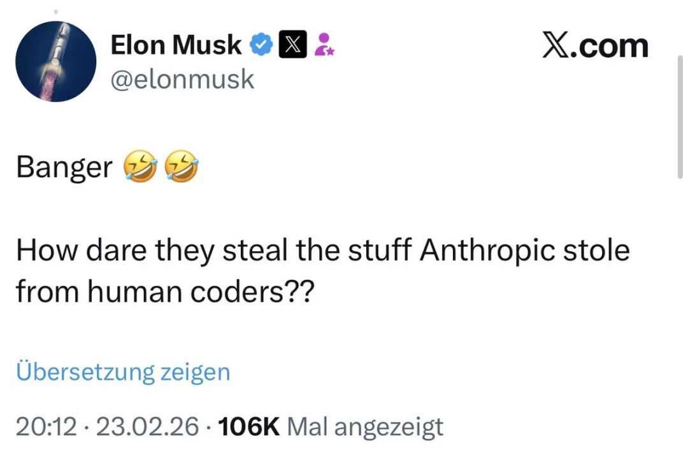
马斯克在X上的回应很直接：「Anthropic在大规模窃取训练数据方面有罪，并且已经不得不支付数十亿美元的和解金。这是事实。」
IO.Net联合创始人Tory Green的评论更精辟：「你们用开放互联网训练自己的模型，然后管别人从你们这学习叫'蒸馏攻击'。」
X上甚至有人模仿香槟产区命名逻辑开玩笑：「只有在加州硅谷地区蒸馏出来的才能叫Claude。」
第三，叙事框架。
Anthropic的博文里有一个关键的逻辑跳跃：把蒸馏 → 包装成外国实验室获得不受保护的AI能力 → 再包装成军事/情报/监控威胁 → 最后得出结论需要出口管制。
每一步之间都有巨大的逻辑间隙。
这就是我为什么说马斯克的吐槽其实挺到位的。大模型公司真是最不适合出来指责所谓蒸馏行为的——因为它们自己就建立在对整个人类知识库的未授权使用之上。你不能一边吃着全人类的数据，一边指着别人说「你偷了我的东西」。
头部大模型公司显然不止是有蒸馏的技术。如果只是蒸馏就能做出好模型，欧洲、印度、日韩早就整出自己的大模型了。真正的竞争力在于人才、算力、工程能力和组织效率。把竞争诉诸「国家安全」和「蒸馏攻击」，本质上是一种政治化的商业策略。
之前我写过一篇关于Anthropic封杀OpenCode的文章。当时DHH说了一句让我很有共鸣的话：「你们用我们的代码训练模型，现在却不让我们自由使用？」那件事和蒸馏争议的底层逻辑是一样的：AI公司在数据获取上极其自由，在数据保护上极其严厉。标准是双重的，受害者的角色是随时切换的。
五角大楼：原则的终极考验
如果说蒸馏争议暴露了Anthropic安全叙事中「对外」的裂缝，那五角大楼冲突就是「对内」的终极考验。
事情的经过是这样的。
2025年夏天，Anthropic和OpenAI、Google、xAI分别跟国防部签了合同，在机密军事网络上部署AI模型，合同金额最高2亿美元。
但Anthropic有一个底线：Claude不得用于完全自主武器系统——就是那种不需要人类授权就能选择和攻击目标的AI；也不得用于对美国公民的大规模监控。
OpenAI、Google和xAI都同意了国防部「用于所有合法用途、不受限制」的条款。只有Anthropic坚持自己的使用限制。
然后事情爆了。据报道，美军通过Palantir平台使用Claude参与了对委内瑞拉总统马杜罗的抓捕行动，行动中有人员伤亡。Anthropic高管联系Palantir高管质询Claude是否被用于此次行动。
这个动作直接激怒了五角大楼。
国防部长Hegseth威胁将Anthropic列为「供应链风险」——这种标签通常只用于外国敌对势力。如果被列入，任何想和美军做生意的公司都必须与Anthropic断绝关系。五角大楼CTO甚至公开说，Anthropic限制军方使用AI「不民主」。
这件事有一个极其讽刺的结构：Anthropic一边指控中国公司蒸馏Claude会导致AI被用于「军事、情报和监控系统」，一边自己拒绝将Claude用于美国的军事和监控。
这个立场在逻辑上其实是一致的——他反对任何人把AI武器化，不管是中国还是美国。但在政治上，这让他同时得罪了美国鹰派和中国批评者。
如果Dario扛住五角大楼的压力，不取消使用限制，他就是AI时代第一个对政府权力说不的科技公司CEO。这在历史上是有分量的——比Google当年退出中国搜索市场还要硬气，因为Google退出的是一个海外市场，Dario拒绝的是自己国家的军方。
如果他没扛住——妥协了、取消了限制——那Anthropic的安全叙事就彻底破产。所有那些万字长文、所有那些「我深感不安」、所有那些安全级别和宪法AI，都变成了一场精心编排的品牌表演。
截至我写这篇文章的时候，结果还没有出来。
两个男人
说到这里，绕不开Altman和Dario的关系。
两个人在AI行业里有一个很清晰的符号意义：Altman代表「快」，Dario代表「稳」。一个亲近政府拥抱消费市场，一个警告风险主攻企业客户。一个用短推文打媒体战，一个写两万字的公开博文。2026年2月的超级碗上，Anthropic甚至投放了讽刺OpenAI在ChatGPT中植入广告的广告——两人的对立已经完全公开化。
但作为两家产品都用的人，我对他们的态度是不同的。
对Altman，我之前写过一句话：「永远不要相信Sam Altman给开发者的承诺」。GPT Store的百万用户我搓出来了，分成呢？一分钱没有。Plugins承诺了什么？失败了。
对Dario，说实话我没有那种被「背叛」的感觉。Claude Code确实好用，我日常90%的工作都在用它。封杀OpenCode那件事让我不舒服，但那更多是平台控制权的问题。
这也许恰恰说明了Dario更聪明：他根本不做那些容易被验证的承诺。他只写万字长文讲「如果做对了世界会多好」，然后用概率性语言——「可能」「也许」「50/50的概率」——给自己留足退路。
谨慎还是滑头？我觉得都是。
一个研究员的出走
在所有关于Anthropic的新闻里，有一条最让我在意。
2025年9月，Anthropic的一位研究员姚顺宇离职，转投Google DeepMind。据报道，他离职的原因中有相当比例是因为Anthropic将中国定性为「敌对国家」。
对于一家号称以「人类福祉」为使命的公司来说，把地缘政治引入企业文化，代价是会失去那些不认同这种叙事的优秀人才。
Dario把卖芯片给中国比作「向朝鲜卖核武器」的时候，他有没有想过，他的公司里有多少人的父母、朋友、同学在中国？有多少人只是想做好AI研究，不想被卷入地缘政治？
也许他想过了，但还是选择了这条路。因为「国家安全」叙事在华盛顿特别好用——能拿到政策影响力、能争取政府合同、能给竞争对手设置壁垒。
这是最让我不舒服的一点。技术竞争就是技术竞争，商业竞争就是商业竞争。把它包装成文明冲突和国家安全威胁，这完全就是又政治又恶心人了。
他是谁？
写到这里，我发现自己的态度其实很矛盾。
我每天用他的产品，而且确实好用。我写过无数篇Claude的评测和教程了。但当我看到他把蒸馏争议包装成国家安全叙事、用「核武器」类比来形容向中国卖芯片的时候——我觉得这人有毛病。
那他到底是谁？
一个物理奥赛少年，因为父亲的死转向了生物学，因为个人力量的局限转向了AI，因为对安全的执着离开了OpenAI，在不到五年时间里做到了3800亿美元的估值——然后发现自己面临着和当初离开的那家公司完全相同的矛盾。
他虚伪吗？也许部分是。你的安全负责人辞职去写诗了，你的模型在生物武器测试中得了63分但你还是要发布它，你的军方客户要求你取消使用限制否则把你列入黑名单。
蒸馏争议中的双重标准是实实在在的。把技术竞争诉诸地缘政治也是一个主动的选择。
2026年1月27日，Dario和Anthropic的其他六位联合创始人宣布承诺捐出80%的个人财富。同一周，他发表了那篇预言AI将「考验我们作为一个物种的本质」的长文。
捐赠和警告。推进和限制。
他总是站在矛盾最尖锐的地方。你可以说他是在寻找矛盾的中心，也可以说他是在制造矛盾的中心。
也许两者之间的区别，就像他自己说的那个概率——50/50。
参考资料：
Dario Amodei: Machines of Loving Grace (2024.10) Dario Amodei: The Adolescence of Technology (2026.1) Dario Amodei on Dwarkesh Patel Podcast (2026.2.13) Dario Amodei on Lex Fridman Podcast #452 CBS 60 Minutes: Anderson Cooper采访Dario Amodei (2025.11) Alex Kantrowitz: The Making of Anthropic CEO Dario Amodei Fortune: Anthropic CEO Admits Balancing Safety with Profits (2026.2) TechCrunch: Anthropic Accuses Chinese AI Labs of Mining Claude (2026.2.23) Axios: Pentagon Threatens to Cut Off Anthropic (2026.2.15) Bloomberg: The Surprise Hit That Made Anthropic Into an AI Juggernaut (2026.2.20) NPR: Anthropic Pays $1.5 Billion to Settle Copyright Lawsuit (2025.9)